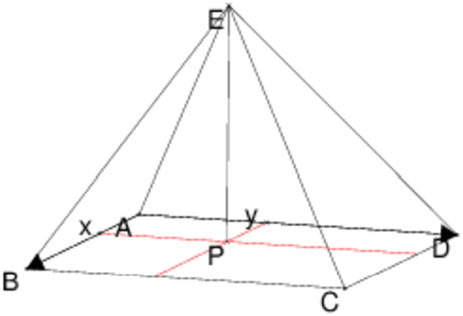

Soit ABCDE une pyramide de sommet E et de base rectangulaire ABCD.
On sait que AE=21, BE=36 et CE=18.
Calculer DE
Trouver une formule générale reliant AE,BE,CE,DE.

Soient P la projection de E sur le plan ABCD et x et y les coordonnées de P dans le repère (A,AB,AC).
On a :
AP2=x2+y2
BP2=(AB−x)2+y2
CP2=(AB−x)2+(AD−y)2
DP2=x2+(AD−y)2
Donc :
AE2=AP2+PE2=x2+y2+PE2
BE2=(AB−x)2+y2+PE2
CE2=(AB−x)2+(AD−y)2+PE2
DE2=x2+(AD−y)2+PE2
On en déduit que :
AE2−BE2+CE2=x2+(AD−y)2+PE2=DE2
D’où la formule :
| AE2+CE2=BE2+DE2 |
Application numérique
Si AE=21, BE=36 et CE=18, on a :
DE=212+182−362
On tape :
sqrt(21^2+18^2-36^2)
On obtient :
27